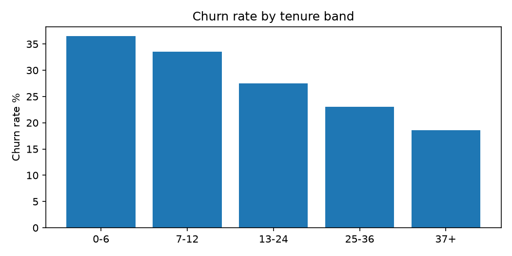
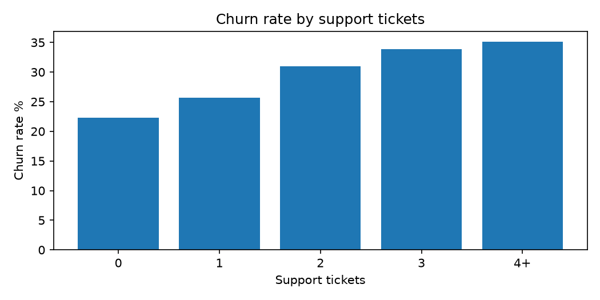
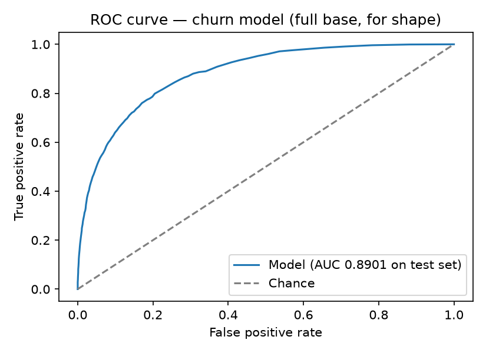
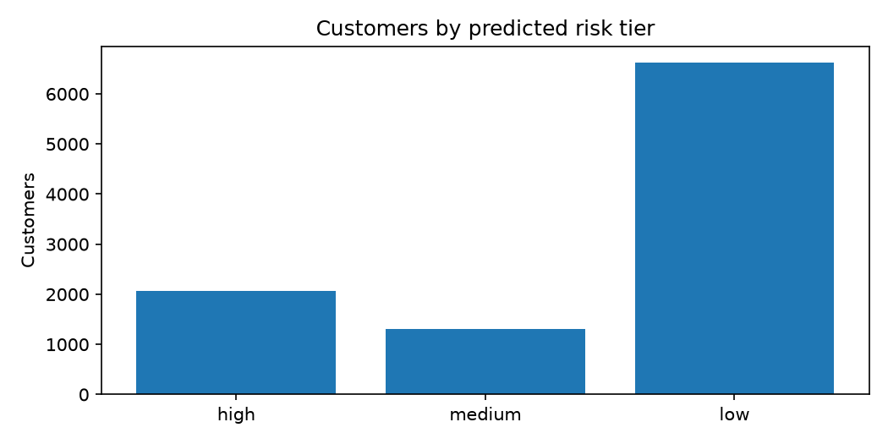

Customer Churn & Retention Analytics
Overall Churn Rate Pct
26.1
Monthly Revenue Total
760494.74
Medium Risk Customers
1302
At Risk Customers Total
3377
Monthly Revenue At Risk High Tier
104630.33
Annual Revenue At Risk High Tier
1255563.96
Actual Churn Rate High Tier Pct
73.16
Pipeline Runtime Seconds
0.73
Churn by tenure band

Churn by support tickets

ROC curve

Risk tier distribution
